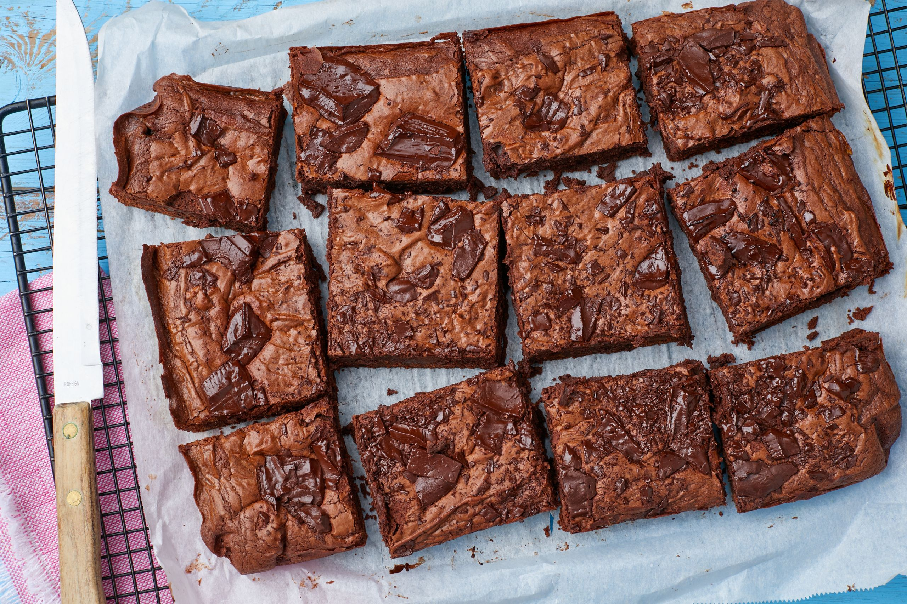

Home
Brownie Recipe

Description
Brownies are a rich, dense, and fudgy dessert that has become a beloved treat around the world. Made from simple ingredients like chocolate, butter, sugar, eggs, and flour, they're known for their moist, gooey interior and slightly crisp edges. Brownies can be made in various forms, from cakey to fudgy, depending on the amount of flour and the baking time. They are often enjoyed plain, but can also be enhanced with add-ins like nuts, chocolate chips, or swirls of caramel. Brownies are a versatile dessert, perfect for sharing at parties, enjoying with a cup of coffee, or simply indulging in on a cozy afternoon.
Ingredients
- 1/2 cup (115g) butter, melted
- 1 cup (200g) granulated sugar
- 2 large eggs
- 1 teaspoon vanilla extract
- 1/3 cup (40g) unsweetened cocoa powder
- 1/2 cup (65g) all-purpose flour
- 1/4 teaspoon salt
- 1/4 teaspoon baking powder
- Optional: 1/2 cup (90g) chocolate chips or nuts
steps
- Preheat your oven to 350°F (175°C) and grease a baking pan or line it with parchment paper.
- In a bowl, combine melted butter and sugar, stirring until smooth.
- Add the eggs and vanilla extract, and mix well.
- Sift in the cocoa powder, flour, salt, and baking powder, and stir until just combined.
- If desired, fold in chocolate chips or nuts.
- Pour the batter into the prepared pan and spread it evenly.
- Bake for 20-25 minutes, or until a toothpick inserted comes out with just a few moist crumbs.
- Allow the brownies to cool in the pan before cutting them into squares and serving.